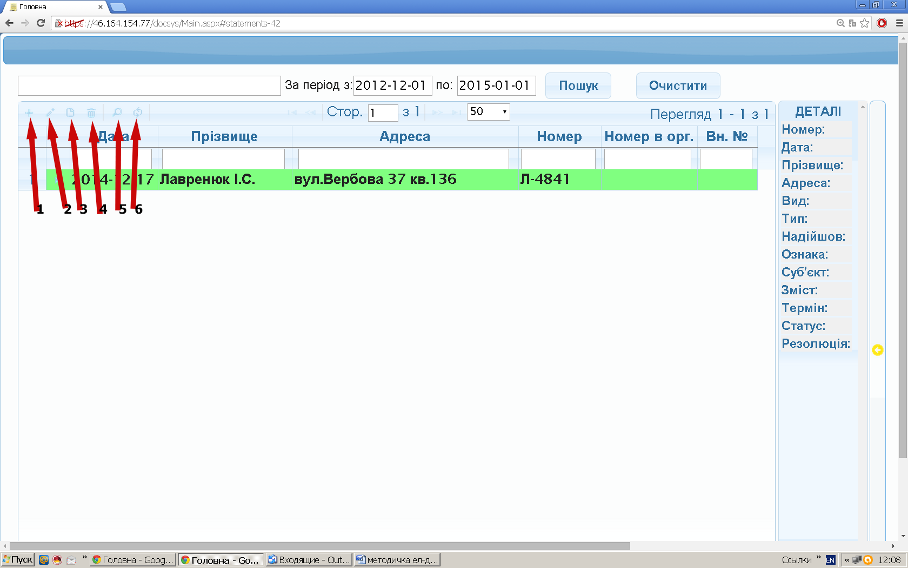

Заяви та звернення містить панель управління записами Рис.1.2:
1
- створення документа,
2
- редагування,
3
- перегляд,
4
- видалення,
5
- відображення панелі пошуку,
6
- оновленння списку документів.

Рис. 1.2